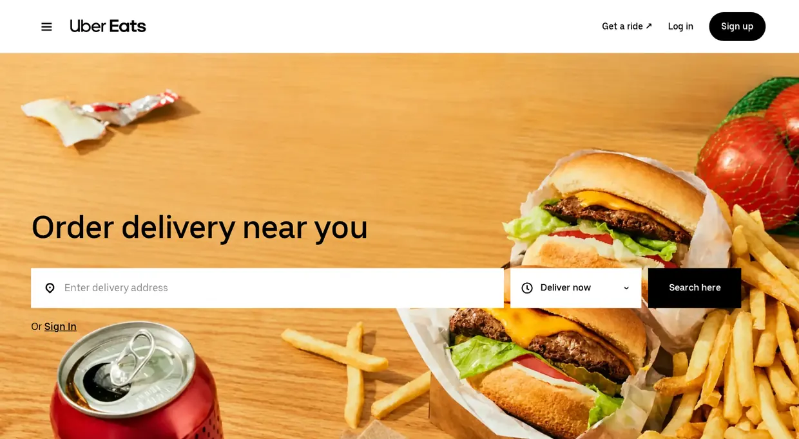
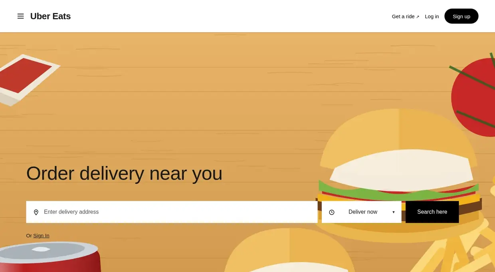

Eval
The WebsiteBench score is a pass rate: 100 × passed tests ÷ total tests over 46,916 hidden tests in 70 tasks. A test scores 1 only if its functional checks pass and every visual checkpoint reaches the similarity threshold. The run below is Qwen 3.8 Max on Uber Eats, which passes 39 of 338 tests.
Uber EatsQwen 3.8 Max11.5%
4 of 10 shown tests passed
reference.local/

rebuild.local/

- RequestPassed. GET /?view=feed answers like the referenceresponse matches
- RequestFailed. GET /?view=store answers like the referencetext similarity 0.6053
- Browser L1Failed. no main.landing
- Browser L1Passed. /api/me looks the same at 1,440 pxsimilarity 1.0000
- Browser L2Failed. no main.feed-page
- Browser L2Failed. no main.results-page
- Browser L2Failed. no main.store-page
- Browser L3Passed. Send a sign-up code, restart the server, reopen the formboth browser runs match
- SystemPassed. compile.sh produces one executableexit status 0
- SystemFailed. Session cookie is host-only and scoped to its ownerprobe returned 200, expected 401
What the agent can use
- Screenshots and interface state of the reference
- Navigation, clicks, typing, scrolling and form submissions
- Images and other media files from the reference
- Its own email inbox for sign-up and verification flows
- The task instructions and the runtime contract
- A shell, build tools and a local browser for its own site
70 expert-built websites, 46,916 hidden tests
One expert builds each reference. Another reviews it and writes the hidden tests. Each task has 302 to 2,016 tests.
Three groups of hidden tests
T1
Request
HTTP responses and form submissions.
T2
Browser
Interface responses, state changes and full user workflows.
- L1An immediate response, such as input validation.
- L2A state change read back later, such as an edited record.
- L3Persistence, other users and recovery.
Some tests also compare screenshots with the reference.
T3
System
Offline builds, restarts, process health and security.